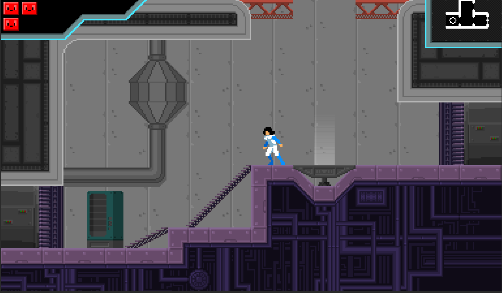
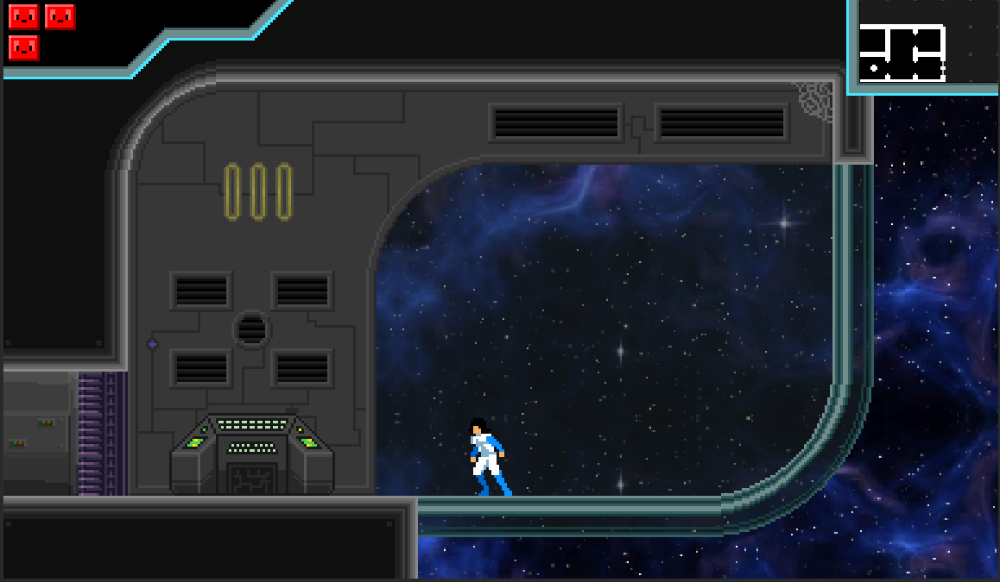

Play as a lone space scavenger making her way around an abandoned
space station filled with rogue robots as she tries to discover what
has happened and defeat the monster trapped within the space station.
Space Station Ouroboros was made across eight weeks for the Hack Your
Summer Program.


Held multiple meetings throughout the week in which we would assign tasks and decide larger decisions regarding the project's direction.
Took detailed notes during team meetings to document assigned tasks and decisions made throughout the meetings.
Using the Limbo AI Godot Plugin, created the behaviors for the melee and ranged enemies. This involved setting up state machines for different enemy behaviors and ensuring smooth transitions between states.
Created the behavior for the final boss of the game. This includes an environmental attack that happens periodically as well as a group of projectile attacks that spawn randomly to incentivize the player to stay mobile.
Created the programmed visuals for the final boss of the game. Used Godot's Inverse Kinematics system to animate the arms of the 3D model as well as some basic code to make the visual move around to make the boss more interesting